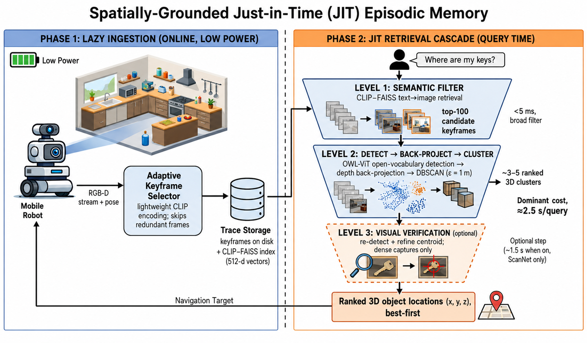
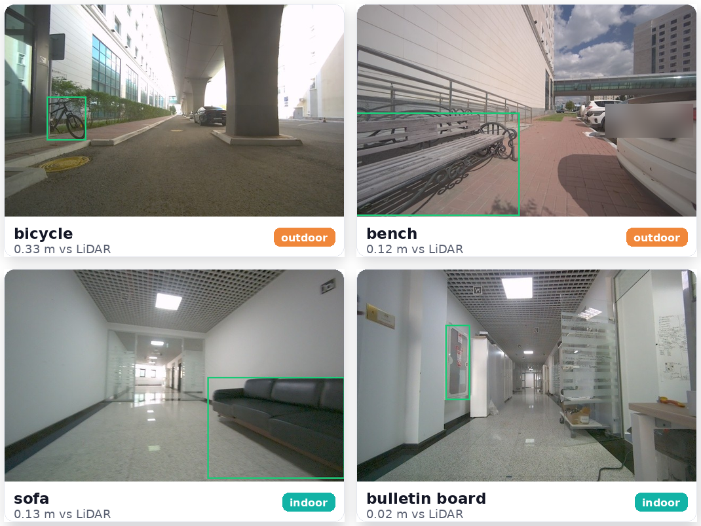
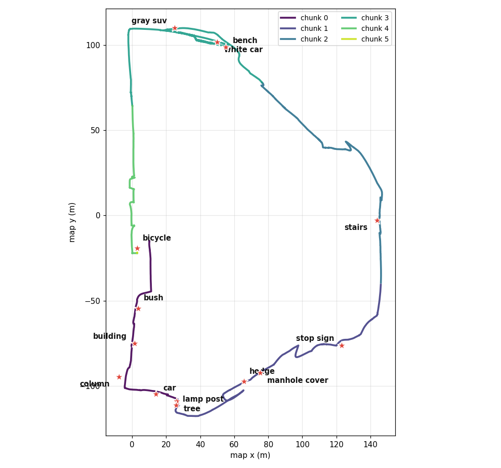
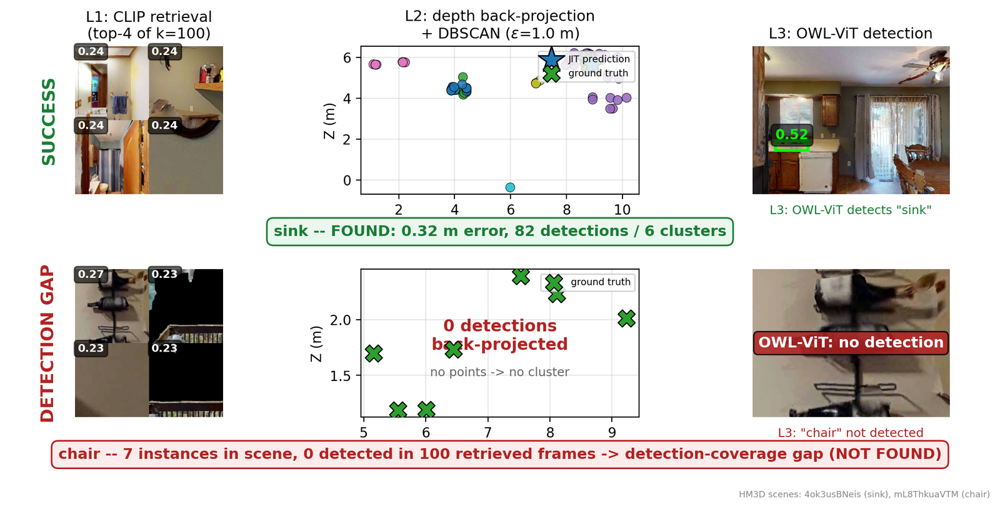

A robot stores RGB-D keyframes behind a lightweight CLIP–FAISS index and defers detection, depth back-projection, and clustering to query time, matching eager 3D maps at a fraction of the build cost.
Nothing about an object's geometry is computed until a text query arrives. Click a stage to see what runs and what it costs.
CLIP text embedding → FAISS search returns the top k=100 keyframes.
OWL-ViT on the k frames → depth back-projection → DBSCAN → ranked 3D candidates.
Re-detect in the top-5 clusters and refine centroids; auto-gated by capture density.

An agent explores an HM3D scene, storing keyframes into its episodic memory. A text query then triggers retrieval, detection, and 3D localization. No map was ever built.
The method is validated in simulation, but nothing in it is simulator-specific. We ran the identical CLIP–FAISS → OWL-ViT → depth back-projection pipeline on a walking quadruped with a ZED stereo camera across two real deployments — a 919 m outdoor campus loop and, separately, an indoor lab building — with no fine-tuning or calibration to either.
Nine solid objects, from vehicles to a manhole cover, all within 0.5 m of onboard RoboSense LiDAR: 100% Loc@0.5 m.
Six chunks form a single drift-free traverse; every query-localized object lands on one global map.
The simulation pipeline run as-is: no fine-tuning, no calibration to the robot or the scene.
Free-form text queries localize objects the method never saw in training, outdoors and indoors — each triangulated to one 3D point across many views and verified against LiDAR. The indoor walk was recorded in a different (compressed) RGB-D encoding and localized from odometry alone, in the close-range regime of the ScanNet/HM3D benchmarks.

14 solid objects across a lab building, all within 0.5 m of RoboSense LiDAR (100% Loc@0.5 m) — tighter than outdoors, at the 1–4 m close range where ZED stereo is sharp.
RGB and depth arrive compressed and no prior map runs; the method is unchanged (only a decoder for the compressed streams added), the decoded depth agreeing with LiDAR to 0.06 m.
CLIP localizes a sparse object at k = 2 where random selection needs ~25× the budget; multi-view clustering tightens each detection 0.14 m → 0.04 m; synonyms (radiator ≡ heater ≡ wall heater) agree within 0.11 m.
Honest notes. Open-vocabulary grounding depends on the query naming something that is actually present: colour resolves a white car from a gray SUV in the same parked row, but a query for an attribute that is not there (a “blue car”, when none is blue) returns the nearest match, and a multi-instance query (“door”) can lock onto a different instance. A sparse LiDAR beam also shoots through a thin object like the bicycle to the wall behind it, so LiDAR is not a fair ground truth there; where the object is solid, LiDAR confirms the localization (table below).
We score JIT's ZED-depth localization against the independent RoboSense LiDAR, projecting its points into the camera at each detection to read the true range. Across nine solid objects spanning vehicles, furniture, a manhole cover, a stop sign and an overpass column, every one lands within 0.5 m: 100% Loc@0.5 m on real hardware, mean 0.21 m.
| object | views | error (xy) |
|---|---|---|
| white car | 46 | 0.06 m |
| gray suv | 26 | 0.09 m |
| manhole cover | 5 | 0.11 m |
| bench | 12 | 0.12 m |
| car | 61 | 0.22 m |
| tree | 9 | 0.29 m |
| building | 9 | 0.29 m |
| stop sign | 45 | 0.35 m |
| column | 16 | 0.40 m |
| mean | – | 0.21 m |

Pick an object. From a stored HM3D memory, JIT retrieves frames, detects the object (OWL-ViT box shown), and back-projects it to a 3D location, with the real error to ground truth.
Every chart is drawn from the released result artifacts; hover for values.
HM3D · Loc@1 m as the retrieval budget k grows. JIT reaches random's best with ~4× fewer calls.
Query latency vs frames stored. Detection is capped at k=100; brute force scales with the memory.
ScanNet · seconds to prepare a scene before any query (log scale).
Loc@1 m with a single geometric hyperparameter set.
Cumulative wall-clock time vs number of queries per scene. JIT starts with a negligible build cost; it overtakes an eager map after the crossover (drag is one-time build; slope is per-query cost).
141 scenes, 457 queries · macro Loc@1 m.
| Method | Loc@1 m | Build | Storage | Query |
|---|---|---|---|---|
| JIT (L1+L2) | 79.1 | 3.1 s | 1.0 MB | 2.5 s |
| JIT (+L3) | 81.3 | 3.1 s | 1.0 MB | 2.5 s |
| ConceptFusion | 74.1 | 286 s | ~250 MB | 25 ms |
| VLMaps | 71.8 | 47 s | 490 MB | 48 ms |
| GOAT | 71.7 | 27 s | 58 MB | <1 ms |
| ConceptGraphs | 70.3 | 2,160 s | 7 MB | <10 ms |
Reading storage fairly: the column is each method's own built artifact; the raw RGB-D keyframes every method ingests at build time are excluded from all rows. JIT's 1.0 MB index is the smallest artifact here (7×–490× under the eager maps). JIT alone retains those shared keyframes (~375 MB) to detect at query time; the eager maps fuse the frames into their map and discard them, a deliberate storage-for-compute trade that buys the seconds-not-hours build.
ScanNet · R@k (oracle upper bound over ranked candidates).
| Method | R@1 | R@3 | R@5 |
|---|---|---|---|
| JIT (+L3) | 81.3 | 86.7 | 87.7 |
| JIT (L1+L2) | 79.1 | 83.9 | 84.2 |
| Random-100 (single-best) | 80.0 | 80.0 | 80.0 |
| Random-100 + DBSCAN | 74.2 | 80.5 | 80.8 |
Successes and failure modes: the retrieved keyframes, the detection, and the projected 3D hypothesis.

@unpublished{jit_episodic_memory,
title = {Spatially-Grounded Just-in-Time Episodic Memory for Mobile Robots},
author = {Shyngyskhan Abilkassov and Almas Shintemirov},
year = {2026},
note = {Under review}
}